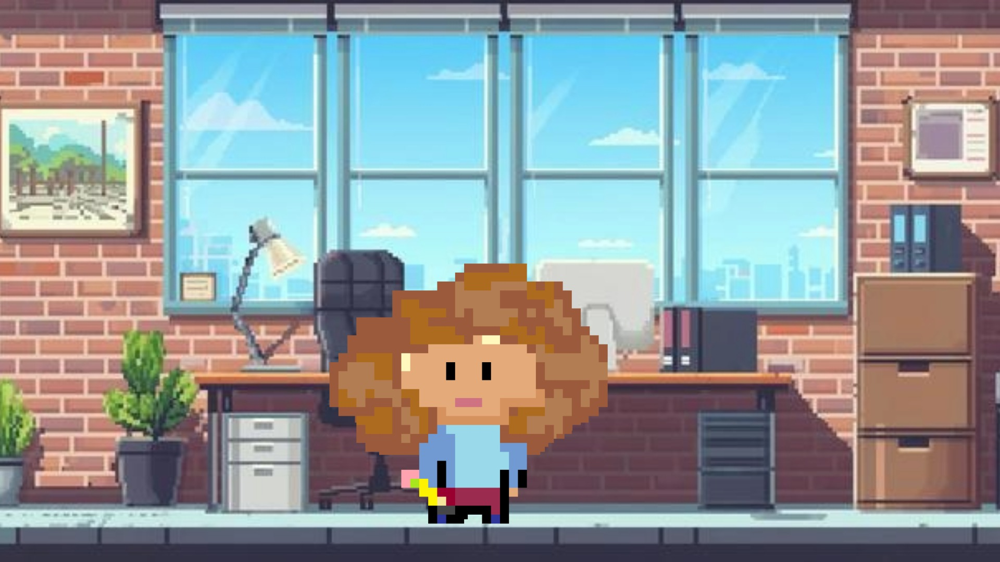
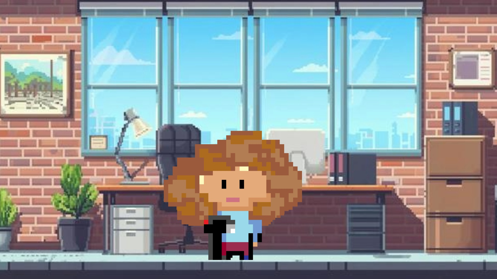
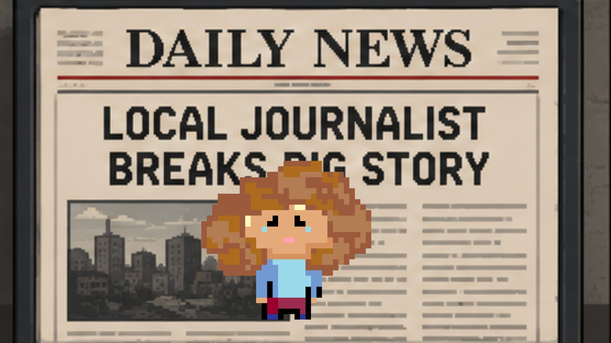

THE NEWSROOM
★
ELLA HABERMEYER
★
JOURNALISM SIMULATOR
▶ START YOUR STORY
EDITOR
Step 01 — Format
What do you want to work on today?
A
Print article — dig into a story, report it out, write it up
B
Video package — get on camera and bring the story to life

EDITOR
Step 02 — Story
What issue sounds most interesting right now?
A
Political scandal — a primary candidate is pressuring every other candidate to drop out of the race
B
A new Southern Utah development that will consume 150 million gallons of water per year
C
A controversial 20,000-seat amphitheater at the base of Provo Canyon
ELLA
Step 03 — Sources
Who do you choose to interview?
EDITOR
Step 04 — Deadline
How long do you take to write the article?
A
1 hour — file it fast, move on
B
1 day — give it room to breathe
C
3–4 days — do it right

EDITOR
Step 02 — Story
What issue sounds most interesting right now?
A
International Bus Road-eo rides into Salt Lake City
B
BYU chef wins culinary challenge, moves on to nationals
C
Sundance documentary focuses on the fight to save Great Salt Lake
ELLA
Step 03 — Sources
Who do you choose to interview?
EDITOR
Step 04 — Edit Bay
How long do you take to finish editing the video package?
A
6 hours — quick cut, get it out
B
1 day — polish it up
C
3–4 days — cinematic perfection
★ BREAKING NEWS ★
YOU LANDED
THE FRONT PAGE!
Your instincts were sharp. The right sources, the right story, the right amount of time. The editor loved it — and so did readers.
▶ READ THE PUBLISHED STORY
→ VIEW MY PORTFOLIO
↺ PLAY AGAIN

BETTER LUCK NEXT EDITION
DIDN'T MAKE
THE FRONT PAGE.
The story had potential — but the approach left something to be desired. The editor buried it. Still, the work speaks for itself.
▶ READ IT ANYWAY
→ VIEW MY PORTFOLIO
↺ TRY AGAIN